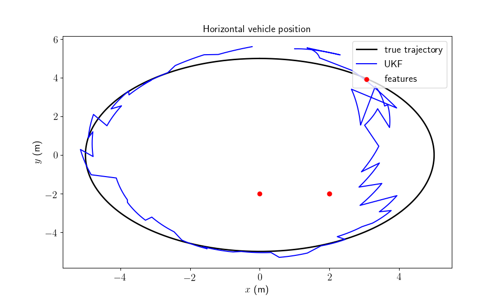
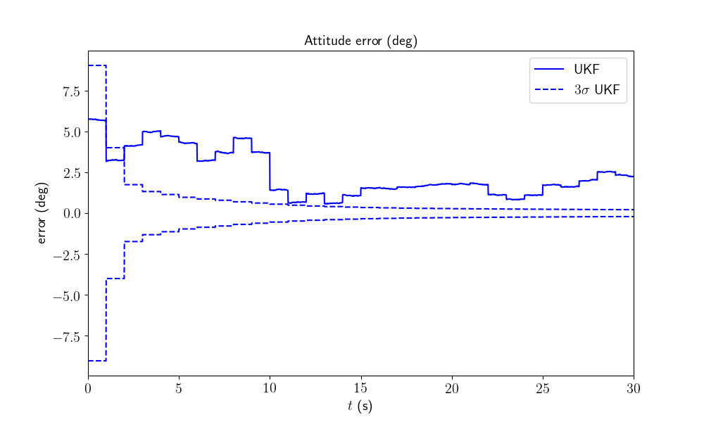

Note
Click here to download the full example code
Navigation on Flat Earth - Example¶
Goals of this script:
apply the UKF on parallelizable manifolds for estimating the 3D attitude, velocity and position of a moving vehicle.
We assume the reader is already familiar with the approach described in the tutorial.
This script proposes an UKF on parallelizable manifolds to estimate the 3D attitude, the velocity, and the position of a rigid body in space from inertial sensors and relative observations of points having known locations by following the setting of [BB17] and [VCSO10]. The vehicle is owed with a three axis Inertial Measurement Unit (IMU) consisting in accelerometers and gyroscopes. Observations of the relative position of known features (using for instance a depth camera) are addressed.
Import¶
from scipy.linalg import block_diag
import ukfm
import numpy as np
import matplotlib
ukfm.utils.set_matplotlib_config()
Model and Simulation¶
This script uses the INERTIAL_NAVIGATION model class that requires the
sequence time and the IMU frequency to create an instance of the model.
# sequence time (s)
T = 30
# IMU frequency (Hz)
imu_freq = 100
# create the model
model = ukfm.INERTIAL_NAVIGATION(T, imu_freq)
The true trajectory is computed along with noisy inputs after we define the noise standard deviation affecting the (accurate) IMU.
# IMU standard-deviation noise (noise is isotropic)
imu_std = np.array([0.01, # gyro (rad/s)
0.01]) # accelerometer (m/s**2)
# simulate true trajectory and noised input
states, omegas = model.simu_f(imu_std)
The state and the input contain the following variables:
states[n].Rot # 3d orientation (matrix)
states[n].v # 3d velocity
states[n].p # 3d position
omegas[n].gyro # robot angular velocities
omegas[n].acc # robot specific forces
Note
The IMU is assumed unbiased. IMU biases are addressed on the IMU-GNSS fusion problem with real KITTI data.
We compute noisy measurements at low frequency based on the true state sequence.
# observation frequency (Hz)
obs_freq = 1
# observation noise standard deviation (m)
obs_std = 1
# simulate landmark measurements
ys, one_hot_ys = model.simu_h(states, obs_freq, obs_std)
A measurement ys[k] contains stacked observation of all visible landmarks.
In this example, we have defined three landmarks that are always visible.
Filter Design and Initialization¶
We now design the UKF on parallelizable manifolds. This script embeds the state in \(SO(3) \times \mathbb{R}^6\), such that:
the retraction \(\varphi(.,.)\) is the \(SO(3)\) exponential for orientation, and the standard vector addition for the vehicle velocity and position.
the inverse retraction \(\varphi^{-1}(.,.)\) is the \(SO(3)\) logarithm for orientation and the standard vector subtraction for the vehicle velocity and position.
Remaining parameter setting is standard. The initial errors are set around 10 degrees for attitude and 1 meter for position standard deviation. These initial conditions are challenging.
# propagation noise matrix
Q = block_diag(imu_std[0]**2*np.eye(3), imu_std[1]**2*np.eye(3))
# measurement noise matrix
R = obs_std**2 * np.eye(3*model.N_ldk)
# initial error matrix such that the state is not perfectly initialized
P0 = block_diag((10*np.pi/180)**2*np.eye(3), np.zeros((3, 3)), np.eye(3))
# sigma point parameters
alpha = np.array([1e-3, 1e-3, 1e-3])
# start by initializing the filter with a string error state
state0 = model.STATE(
Rot=ukfm.SO3.exp(10*np.pi/180*np.ones(3)/3).dot(states[0].Rot),
v=states[0].v,
p=states[0].p + np.array([1, 0.5, 0.7])
)
# create the UKF
ukf = ukfm.UKF(state0=state0,
P0=P0,
f=model.f,
h=model.h,
Q=Q,
R=R,
phi=model.phi,
phi_inv=model.phi_inv,
alpha=alpha)
# set variables for recording estimates along the full trajectory
ukf_states = [state0]
ukf_Ps = np.zeros((model.N, 9, 9))
ukf_Ps[0] = P0
Filtering¶
The UKF proceeds as a standard Kalman filter with a simple for loop.
# measurement iteration number
k = 1
for n in range(1, model.N):
# propagation
ukf.propagation(omegas[n-1], model.dt)
# update only if a measurement is received
if one_hot_ys[n] == 1:
ukf.update(ys[k])
k = k + 1
# save estimates
ukf_states.append(ukf.state)
ukf_Ps[n] = ukf.P
Results¶
We plot the trajectory, the position of the landmarks and the estimated trajectory, along with attitude error, position error, and confidence interval. Since we plot position in the horizontal plan, two landmarks are superposed.
model.plot_results(ukf_states, ukf_Ps, states)
- 
- 

It seems that the proposed UKF meets strong difficulties and takes some time to converge due to the challenging initial conditions. A major problem of the UKF (in this problem and with this choice of retraction) is to be particularly overoptimism regarding attitude error, which is clearly outside the confidence intervals.
Conclusion¶
This script readily implements an UKF for estimation the 3D pose and velocity of a platform. Results are not particularly satisfying, since the filter difficultly converges to the true state even at the end of the trajectory. But is it not possible to improve the filter accuracy and consistency performances by inflating sensor noise parameters of the filter, or better, by defining a retraction more adapted to the considered problem ?
You are now able to:
benchmark the UKF and compare it to the extended Kalman filter and invariant extended Kalman filter of [BB17].
modify the measurement model with a non-linear range and bearing measurement.
add sensor biases both on the gyro and accelerometer measurements, and estimate them.
Total running time of the script: ( 0 minutes 14.075 seconds)